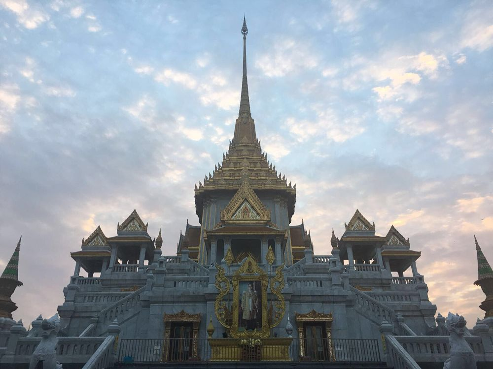
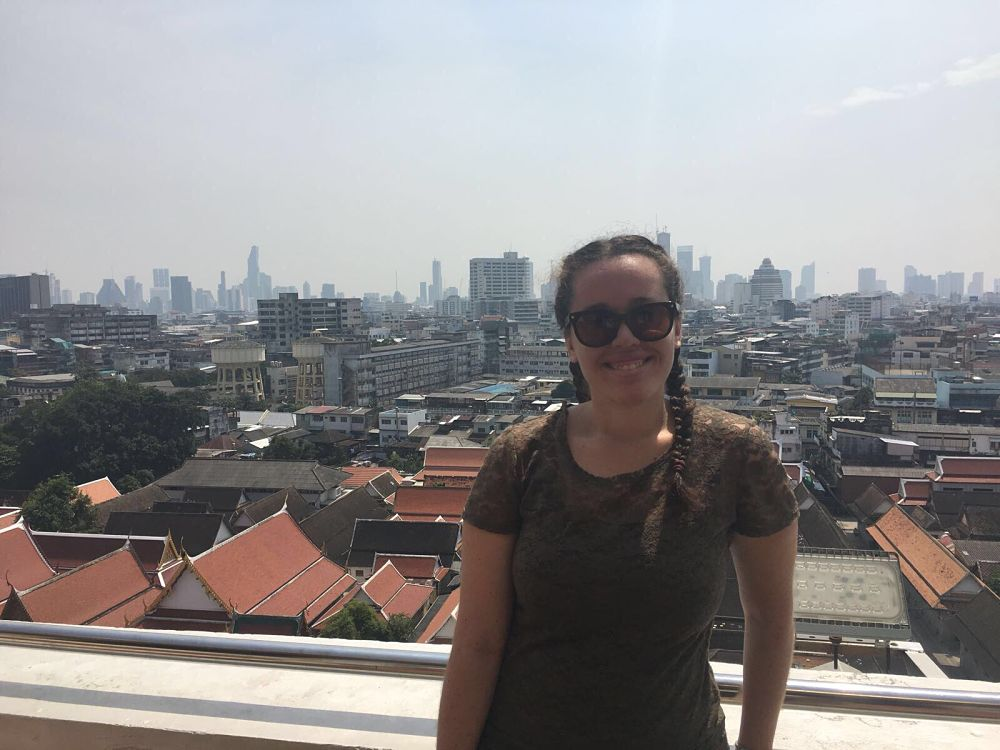
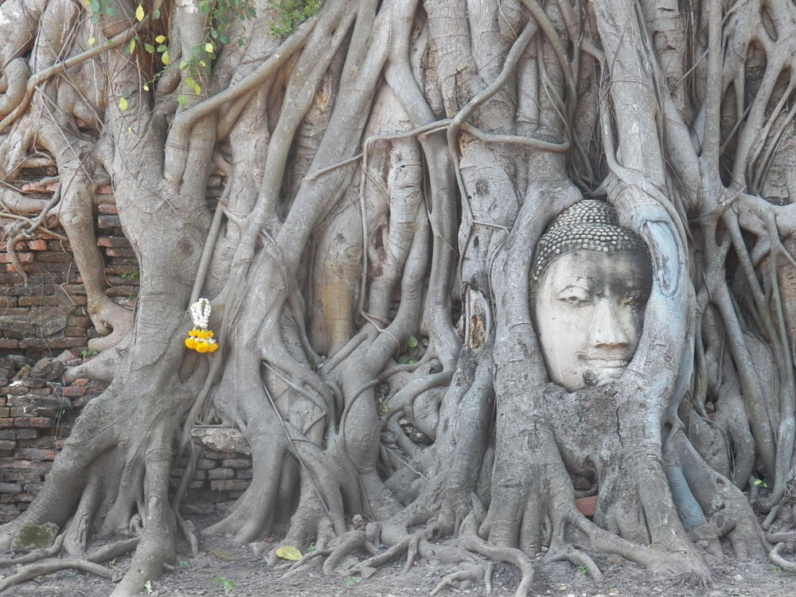
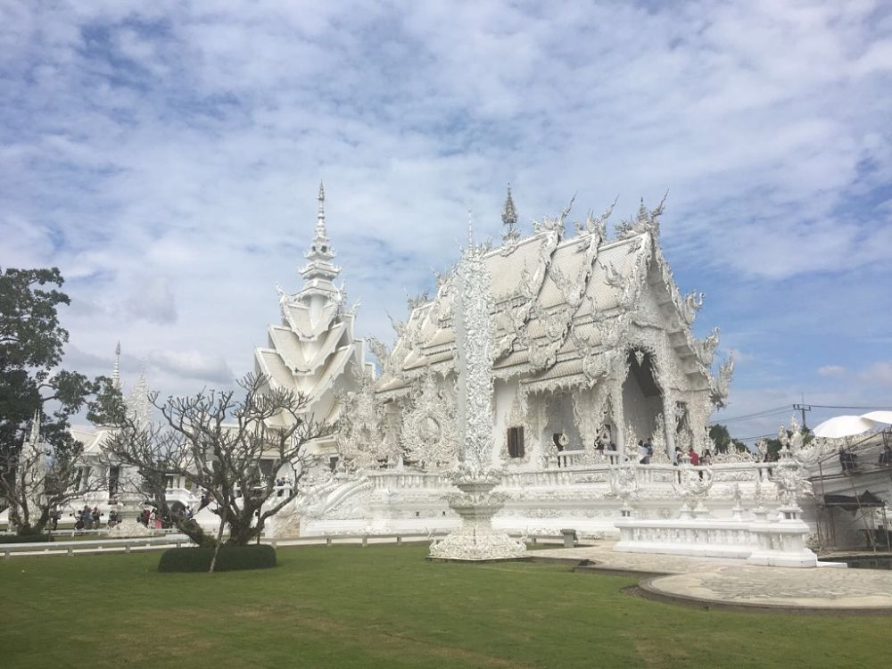
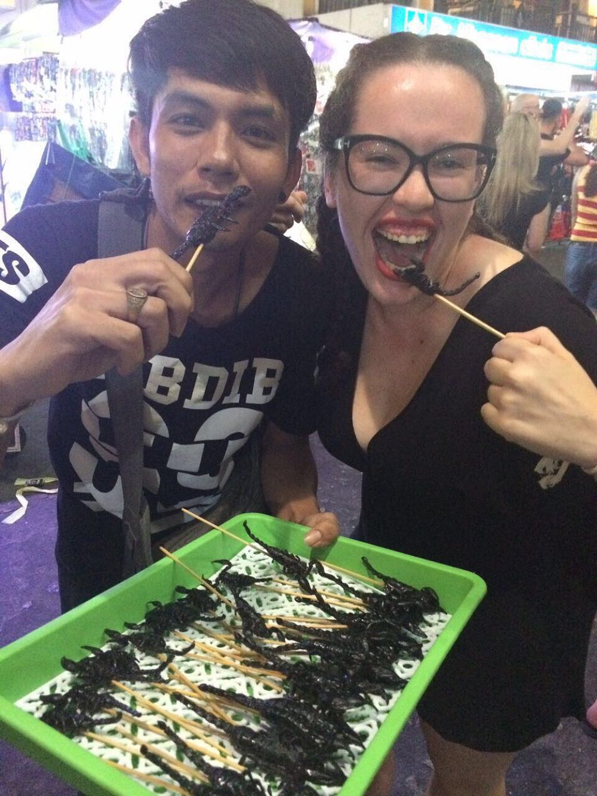
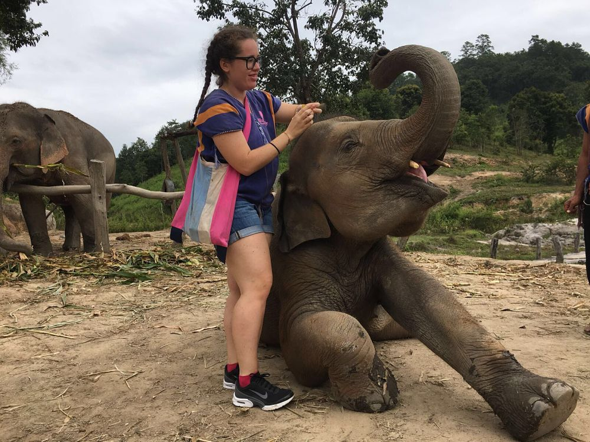
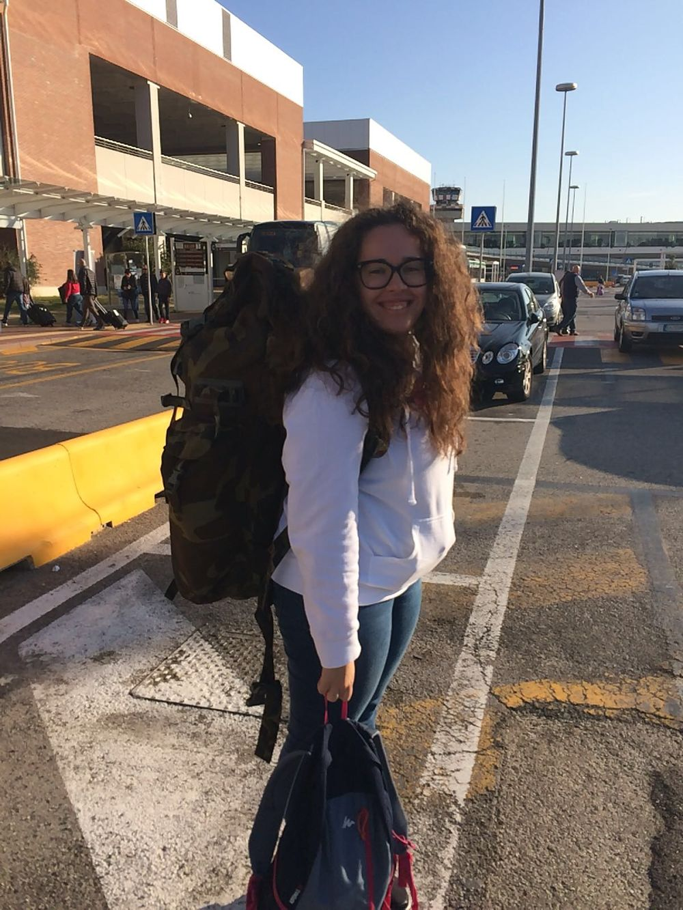

Thailand: The Land of Many Things
Thailand; what’s the first thing that comes to your mind when you hear this name? Bangkok, the land of smiles, Hangover 2, sexual tourism, elephants… So many stereotypes, but after my first trip to this incredible country, I’ve had the chance to discover if all those “rumors” were the truth.
After a long trip from Venice to Bangkok, stopping in Doha, I have landed in Bangkok, the capital and the first thing that I remember were the tourists, all of them getting ready with their backpack to travel around Asia. My dear Thai friend FA [which real name is Napachat, all the Thai people call themselves by their nicknames] picked me up inside the airport and it was the first most beautiful moment of the trip, seeing him after 6 years apart, 6 YEARS, CAN YOU IMAGINE? Some people may be could think that it’s impossible since we never talked a lot in these years, but I think that this shows how incredible long distance friendship can be. It felt like no time had passed!
We took the Airport Rail Link and we changed the line to reach the MRT Hua Lamphong and we found my hostel. I left my luggage in my room and we went outside to discover Chinatown, the closest district. It was magical, with all these neon lights, some of them in Chinese and others in English. This side of BKK is incredible, chaotic and bizarre and I got lost in the crowd looking at every single thing, from the sellers to the glances intrigued of the tourists.
 
After my first night in Bangkok, I decided to go to Ayutthaya, a city located 80 km from Bangkok, to visit its temples. Only one word can summarize this daily trip, FASCINATING. A private bus picked me up at 7 am and by 9 am, we reached Ayutthaya. The first temple was Wat Phra Ram, a restored ruin located in the Historical Park of Ayutthaya in Pratu, surrounded only by nature. The only thing you will feel is the sound of the wind. After that, we visited Wat Yai Chai Mongkhon, another stunning site built in 1592. There is a gigantic white restored statue of the Buddha in a relaxed position. From this temple, climbing the steep staircase that leads to the chedi, you can enjoy an amazing panoramic view of some temples of the archaeological area.
Then we went to Wat Chaiwatthanaram and the floods of 2011 damaged the watts and highlighted the urgent problems related to its conservation. But luckily the Thai Department of Fine Arts invited World Monuments Fund to examine the situation and the following year, began new work to preserve the structure from new floods. We saw Wat Phukhao Thong or the Monastery of the Golden Mount, which is located off the city island in the plains 2 Km northwest of Ayutthaya in Phukhao Thong Sub-district. Wat Phra Si Sanphet was the temple of the royal family, so there lived no monks and it was used exclusively for royal ceremonies. But my favorite was Wat Mahathat, a Buddhist temple with this extraordinary statue of a Buddha inside a tree and also one of the most photographed places in this area.
 
After this incredible day in the attractive city of Ayutthaya, I spent the night in one of the most famous streets of Thailand for its folklore, Khao San Road. What can I say? You need to see it with your own eyes to understand it, to hear the noise of the pubs, to see how tourists dance with Thai people, to try scorpions or other kinds of insects. This reminded me of my dear city Ponta Pora, in Mato Grosso do Sul, (Brazil); every end of the week, usually from Thursday to Sunday, hundreds of pickups park at the side of the main road. People sit there, they drink, dance and eat, with no worries. I spent the whole night with my dear friend Anna. We drank the famous buckets, we met many people from Italy, NZ, Thailand and danced in the street, the dearest memory that I’ve got from Bangkok.

After just two hours of sleep, I took my bags and left BKK for the second city of Thailand, Chiang Mai. After a short trip by plane, I landed in this amazing city. It is surrounded by a moat and a defensive wall since nearby Taungoo Dynasty of the Bamar people was a constant threat. I spent the day walking around the center of CM and watching the corners of this city. Here one of the differences that I noticed was the architecture of the temples. Here there were more dragons, the temples have other kinds of details. It was quite the opposite than Bangkok, quieter, surrounded by nature. I simply fall in love with Chiang Mai. My main objective to visit CM was to see an Elephant Sanctuary, even if there are others in the south of Thailand, but also to see the famous White Temple of Chiang Rai, the Wat Rong Khun (Thai: วัดร่องขุ่น). It is a contemporary, unconventional, privately-owned art exhibit in the style of a Buddhist temple. It is owned by Chalermchai Kositpipat, who designed, constructed, and opened it to visitors in 1997. I spent the first whole day with ELEPHANTS. I found on the net a nice sanctuary, that gives you the opportunity to spend a day in completely contact with nature and these “tiny” elephants.
bluedailyelephantcare.com (totally recommended!)
You usually spend the day with 3 elephants, we were with the girls of 4-17-44 y.o. You’ll have the chance to stay with the elephants with a small group of people; we were 8 people from Spain, NZ, Australia. You can prepare food for them, you feed them, they hug you and give you lots of kisses and at the end of the day, we took a bath inside a small waterfall with them! You can choose between different packages; the half-day visit, the whole day visit (the one I did) or the one-day bamboo rafting+visit. I definitely recommend them! They treat you like family, you eat all together and you enjoy the day in complete silence. This was one of the best days of my entire life! U N F O R G E T T A B L E!

Day 2 at the discover of Chiang Rai, its temples, and the Golden Triangle: The first temple we visited was Wat Rong Khun, the glorious White Temple. I say that it was a little bit disappointing, from all the photos that I’ve seen on the net, I thought it was bigger, but after all, it’s worth the visit and you should know all its meanings, from the hands before the bridge that symbolizes unrestrained desire. The bridge proclaims that the way to happiness is by foregoing temptation, greed, and desire. You can’t stop or they say that brings you bad luck and you need to reach the gate of Heaven. Second stop, the Wat Rong Suea Ten (The Blue Temple); another not-so-known spot a few km from Chiang Rai. It was a splendid and unusual temple, that unfortunately was under construction at the time, but I had the chance to see the interior and the huge Buddha that marks the spirit. The last stop we went to was the Golden Triangle, the border between Laos-Thailand-Myanmar that has been an area well-known for the growing of opium and drug dealing. We went on a boat ride across to a small island named Don Sao, belonging to Laos. No visa for Laos is required to make this trip. This is popular among tourists, and many small boats offer this service.
After spending 3 days in Chiang Mai, I loved it and realized it shows you the real essence of Thailand. I headed South to the beaches and finally had time to relax! Thailand is an amazing country to explore and I highly recommend it!
